Fall at Debono
Choose two-gallon mums for the front steps or plant them in the garden before a hard frost. Ornamental peppers, kale, cabbage and larger perennials round out the fall benches.

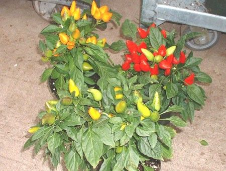

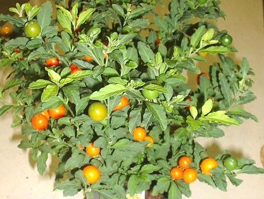

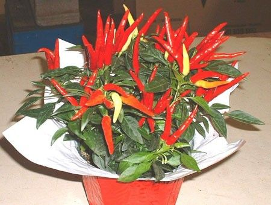

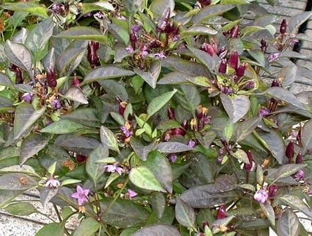

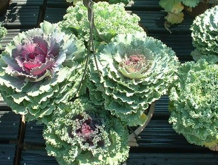

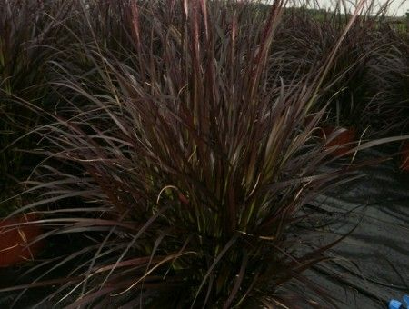

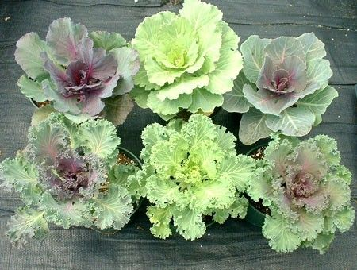

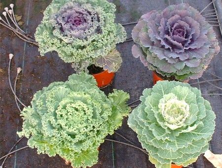

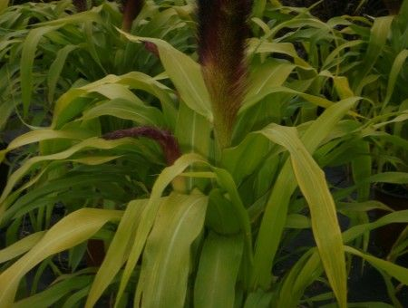

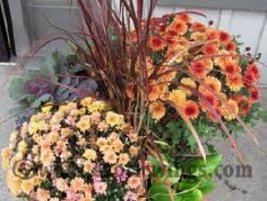

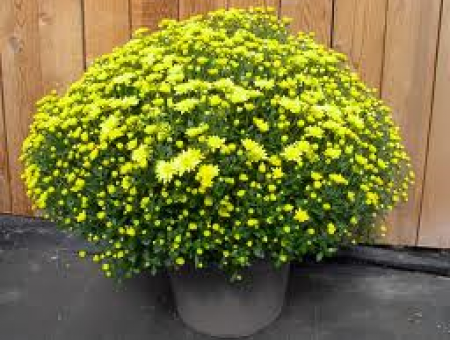

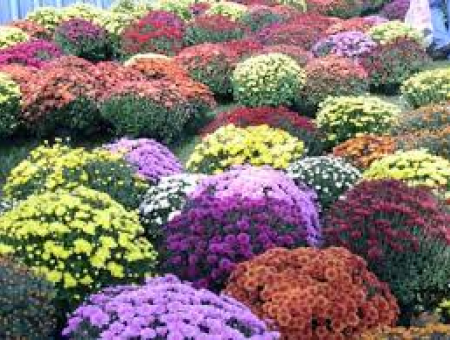

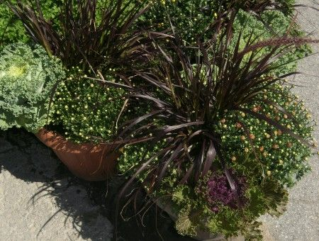

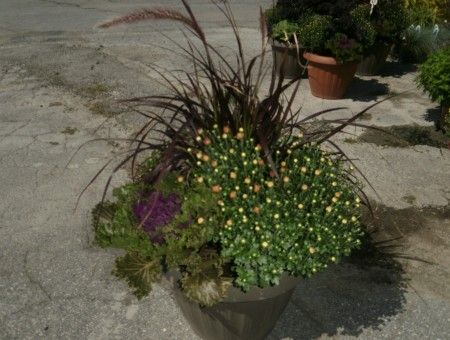

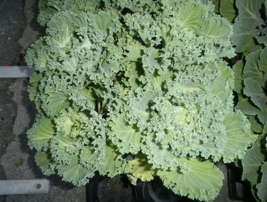

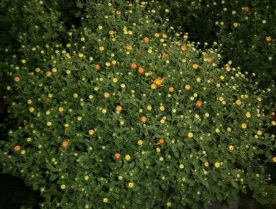

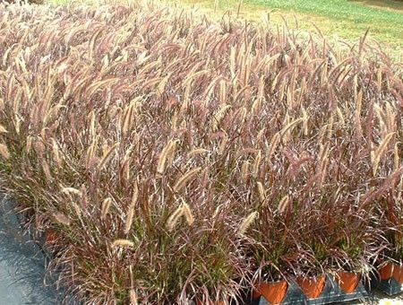

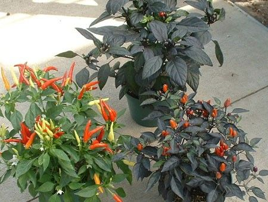

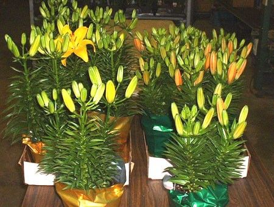
For current availability, call 519-443-7300.